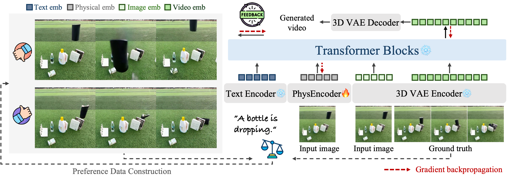
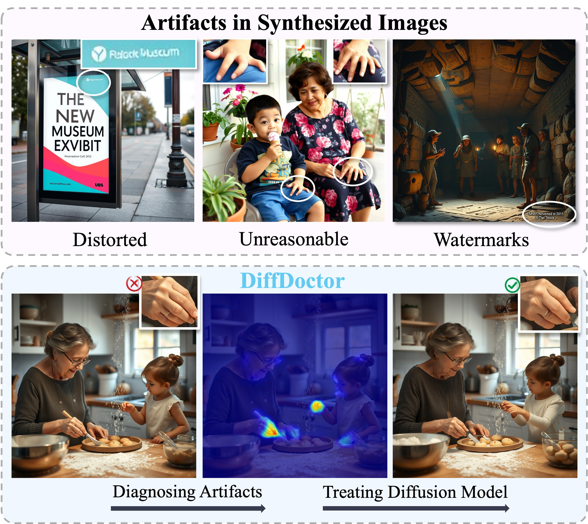

|
Sihui Ji Email / Google Scholar / Twitter / Github |
Biography
Hi👋 I'm Sihui Ji, currently a first-year Ph.D. student at The University of Hong Kong, under the supervision of Prof.Hengshuang Zhao, I received my B.Eng. Degree and Honors Degree (Chu Kochen Honors College) from Zhejiang University, China. Now I focus on generative AI, especially for image and video.
Recent Publications
|  |
PhysMaster: Mastering Physical Representation for Video Generation via Reinforcement Learning
|
|  |
DiffDoctor: Diagnosing Image Diffusion Models Before Treating
|
.jpg)
|
VideoAnydoor: High-fidelity Video Object Insertion with Precise Motion Control
|

|
LayerFlow: A Unified Model for Layer-aware Video Generation
|
|
FashionComposer: Compositional Fashion Image Generation
|
Honors
- HKU Presidential PhD Scholar (HKU-PS), 2024.
- Outstanding Graduates of Zhejiang Province, 2024.
- Top Ten Honors Students in Chu Kochen Honors College, 2023.
- National Scholarship, 2022.
Experiences
- Research Intern, Kuaishou Technology, 2025
- Research Intern, DAMO Academy, Alibaba Group, 2024
Misc
- Conference Reviewer, CVPR, SIGGRAGH, Neurips
- Teaching Assistant, Computer Programming, 2024 Fall
- Invited talk, GAMES Webinar, 2025